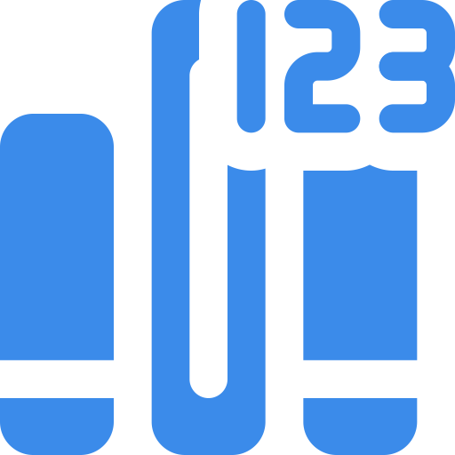

The Best of Both Worlds
Today's data formats present us with a dilemma: Use text based formats that are bloated and slow, or use binary formats that humans can't read. Wouldn't it be nice to have the benefits of both and the drawbacks of neither?
Twin Formats
Edit Text, Transmit Binary
Encoded data should be easy to read and edit, but also low-cost to process and transmit. Concise Encoding has twin 1:1 compatible formats: one in text, and one in binary.
Save CPU and bandwidth
Keep everything in binary while transmitting and storing, and seamlessly convert to/from text when a human is involved.
Strongly Typed
All the common types you need
Tired of coercing your data into strings? Concise Encoding supports these types natively:
- Bool
- Integer (arbitrary size)
- Float (binary, decimal, arbitrary size)
- UUID
- Time (date, time, timestamp)
- Resource Identifier (URL, URI, IRI, etc)
- String
- List
- Map
- Markup
- Relationship
- Typed Arrays (bytes, ints, floats, etc)
- Reference (for recursive/repetitive data)
- Comment
- Constants
- Nil
- NA (not available)
- Media
- Custom (encapsulate your own)
Secure
It's a hostile world!
Did you know that many security breaches happen as a result of slightly different behaviors in parsers? A rounding or replacing Python parser at the access-control level, mixed with a truncating Go parser at the database level, could be exploited to poison your data and elevate privileges!
The Concise Encoding spec is built with security in mind, ensuring consistent, reliable behavior among all codecs to keep your data and system safe.

Versioned
Because nobody's perfect
No specification is impervious to errors-in-specification, or the need to change to meet a new reality. Changing a specification leads to all sorts of incompatibilities and mismatched implementations UNLESS you version both the spec AND the documents.
In Concise Encoding, both specs and documents are versioned, so you can rest secure in the knowledge that a CE decoder will properly handle your CE document forever.
Plug and Play
Extra steps suck
Concise Encoding can be used with or without a schema. There are no extra compilation phases, and no complicated definition files or code generation required to use it. Just import the library and go!
c1
{
"boolean" = true
"binary int" = -0b10001011
"octal int" = 0o644
"decimal int" = -10000000
"hex int" = 0xfffe0001
"very long int" = 100000000000000000000000000000000000009
"decimal float" = -14.125
"hex float" = 0x5.1ec4p+20
"very long flt" = 4.957234990634579394723460546348e+100000
"not-a-number" = nan
"infinity" = inf
"neg infinity" = -inf
}
c1
{
"string" = "Strings support escape sequences: \n \t \27f"
"url" = @"https://example.com/"
"email" = @"mailto:me@somewhere.com"
}
Other Basic Types
c1
{
"uuid" = f1ce4567-e89b-12d3-a456-426655440000
"date" = 2019-07-01
"time" = 18:04:00.940231541/E/Prague
"timestamp" = 2010-07-15/13:28:15.415942344/Z
"na" = na:"database is offline"
"nil" = nil
"media" = |application/x-sh 23 21 2f 62 69 6e 2f 73 68 0a 0a
65 63 68 6f 20 68 65 6c 6c 6f 20 77 6f 72 6c 64 0a|
}
c1
{
"list" = [1 2.5 "a string"]
"map" = {"one"=1 2="two" "today"=2020-09-10}
"bytes" = |u8x 01 ff de ad be ef|
"int16 array" = |i16 7374 17466 -9957|
"uint16 hex" = |u16x 91fe 443a 9c15|
"float32 array" = |f32 1.5e10 -8.31e-12|
}
c1
{
main-view = <View,
<Image "src"=@"img/avatar-image.jpg">
<Text "id"="HelloText",
Hello! Please choose a name!
>
// OnChange contains code which might have problematic characters.
// Use verbatim sequences (\.IDENTIFIER ... IDENTIFIER) to handle this.
<TextInput "id"="NameInput" "style"={"height"=40 "color"="gray"} "OnChange"="\.@@
NameInput.Parent.InsertRawAfter(NameInput, '<Image "src"=@"img/check.svg">')
HelloText.SetText("Hello, " + NameInput.Text + "!")
@@",
Name me!
>
>
}
c1
{
// Entire map will be referenced later as $id1
"marked object" = &id1:{
"recursive" = $id1
}
"ref1" = $id1
"ref2" = $id1
// Reference pointing to part of another document.
"outside ref" = $@"https://xyz.com/document.cte#some_id"
}
c1
{
// Marked base resource identifiers used for concatenation.
"resources" = [
&people:@"https://springfield.gov/people#"
&mp:@"https://mypredicates.org/"
&mo:@"https://myobjects.org/"
]
// Map-encoded relationships (the map is the subject)
$people:"homer_simpson" = {
/* $mp refers to @"https://mypredicates.org/""
* $mp:"wife" concatenates to @"https://mypredicates.org/wife"
*/
$mp:"wife" = $people:"marge_simpson"
// Multiple relationship objects
$mp:"regrets" = [
$firing
$forgotten_birthday
]
}
"relationship statements" = [
&marge_birthday:($people:"marge_simpson" $mp:"birthday" 1956-10-01)
&forgotten_birthday:($people:"homer_simpson" $mp:"forgot" $marge_birthday)
&firing:($people:"montgomery_burns" $mp:"fired" $people:"homer_simpson")
// Multiple relationship subjects
([$firing $forgotten_birthday] $mp:"contribute" $mo:"marital_strife")
]
}
c1
{
/* Given: Actual type and value of "eggshell" and
* "navy-blue" have been defined in a schema
*/
"wall color" = #eggshell
"door color" = #navy-blue
}
c1
{
// Custom types are user-defined, with user-supplied codecs.
"custom text" = |ct cplx(2.94+3i)|
"custom binary" = |cb 04 f6 28 3c 40 00 00 40 40|
}